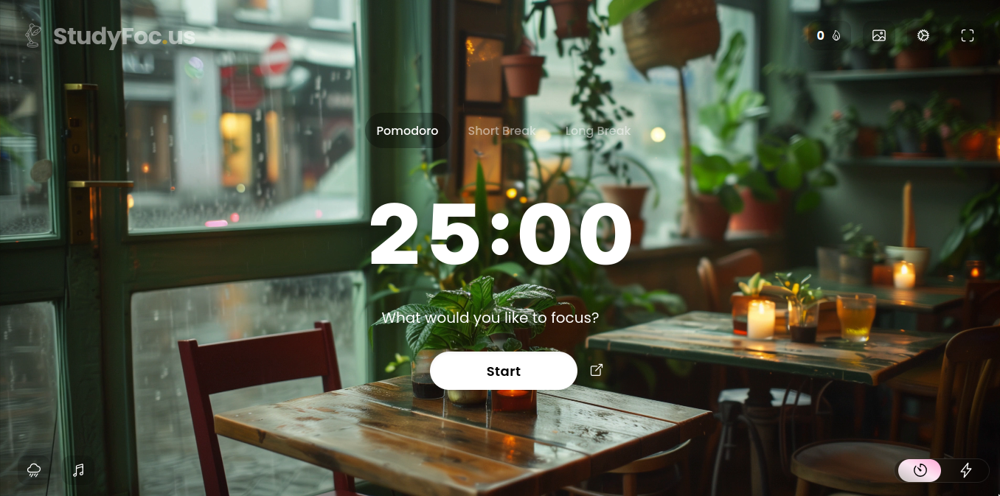

Mẹo và chiến lược đọc Tiếng Anh¶
Một cách đơn giản để lên trình Tiếng Anh là.. ĐỌC.
Nhiều người học đã giỏi lên cũng nhờ việc này. Đọc nhiều hơn thường là lời khuyên cho những người học muốn cải thiệu kĩ năng của mình.
Mục tiêu của bài viết này là cung cấp các chiến lược và mẹo để giúp bạn bắt đầu đọc, tiếp tục đọc, và đọc đúng cách. Cùng với đó, chúng ta sẽ lần lượt tháo gỡ những hiểu lầm thường gặp khiến nhiều người bỏ cuộc giữa chừng.
Pomodoro / Timeboxing¶
Đây là một kỹ thuật mình muốn giới thiệu cho những bạn đang học Tiếng Anh nhưng thường xuyên cảm thấy khó tập trung. Phương pháp này đơn giản: bạn đặt hẹn giờ để học trong một khoảng thời gian ngắn (ví dụ 25 phút), sau đó nghỉ ngắn (5 phút). Một số người chọn phiên bản khác như 15/3 hay 50/10, tùy theo sức tập trung và lịch trình của bạn.
Điều quan trọng là bạn chỉ làm một việc duy nhất trong thời gian đó — không chuyển tab, không kiểm tra điện thoại, không bật nhạc có lời. Khi thời gian học kết thúc, bạn nghỉ đúng theo lịch đã đặt. Dù đang rất vào guồng, bạn vẫn nên dừng lại. Việc này giúp bạn tránh kiệt sức, thay vì cố học đến khi não.exe ngừng hoạt động.
Một số người nghĩ rằng chỉ cần rảnh thì họMục tiêu của bài viết này là cung cấp các chiến lược và mẹo để giúp bạn bắt đầu đọc, tiếp tục đọc, và đọc đúng cách. Cùng với đó, chúng ta sẽ lần lượt tháo gỡ những hiểu lầm thường gặp khiến nhiều người bỏ cuộc giữa chừng. c, hoặc đợi có hứng rồi học, nhưng đây là công thức chắc chắn dẫn tới việc... không học. Bởi cảm hứng không phải lúc nào cũng đến, còn thời gian rảnh thì thường được dùng để làm việc khác.
Pomodoro là cách giúp bạn chủ động dành thời gian cho việc học. Hãy bắt đầu với một phiên 15 phút hôm nay. Đừng chờ đến khi thấy đủ động lực rồi mới bắt đầu đọc. Bạn có thể sử dụng https://studyfoc.us/ trên trình duyệt cho Pomodoro + nhạc nền để đọc sách cùng lúc.

Biến việc đọc trở thành một thói quen¶
Một trong những sai lầm phổ biến nhất của người học Tiếng Anh là đợi đến khi nào rảnh hoặc khi nào thấy có hứng mới đọc. Cách tiếp cận này hiếm khi hiệu quả — bởi bạn sẽ luôn tìm được một thứ gì đó khẩn cấp hơn, dễ hơn hoặc thú vị hơn để làm thay vì đọc một đoạn văn Tiếng Anh có vài từ lạ.
Giải pháp không nằm ở động lực mà là ở thói quen.
Thay vì cố gắng đọc thật nhiều trong một ngày rồi không đọc nữa, bạn nên thiết lập một thói quen đọc hàng ngày, dù chỉ là 10–15 phút.
Bạn không cần phải đọc thứ gì cao siêu hay học thuật ngay từ đầu. Hãy chọn những tài liệu bạn thấy vừa sức, có thể là các bài viết dễ trên Internet, song song với một chút nâng cấp dần dần. Điều quan trọng là duy trì được chuỗi ngày đọc, chứ không phải đọc được gì to tát.
Một người đọc Tiếng Anh mỗi ngày 10 phút trong 3 tháng sẽ giỏi hơn một người đọc 2 tiếng trong một ngày duy nhất rồi bỏ cuộc. Đơn giản vậy thôi.
Tính hữu ích của việc học ngữ pháp¶
Một quan niệm phổ biến trong cộng đồng học Tiếng Anh là: Học ngữ pháp phí thời gian. Nhưng trên thực tế, việc không thật sự học ngữ pháp lại khiến rất nhiều người mắc kẹt ở trình độ trung cấp mãi không tiến lên được.
Học ngữ pháp giúp bạn đọc hiểu nhanh và chính xác hơn. Khi bạn nắm được cấu trúc ngữ pháp, bạn không còn phải đoán mò mối quan hệ giữa các từ trong câu. Bạn sẽ nhận ra đâu là chủ ngữ, động từ, mệnh đề phụ hay liên từ — tất cả những thứ mà nếu chỉ đọc cho quen, bạn có thể không bao giờ tự khám phá ra được đầy đủ.
Ngữ pháp không phải là danh sách các quy tắc như công thức toán của mấy hướng dẫn ngữ pháp ngoài chợ. Nó là cách tư duy của ngôn ngữ. Khi hiểu được nó, bạn sẽ thấy các đoạn văn Tiếng Anh trở nên rõ ràng và có trật tự hơn nhiều. Câu phức không còn là một đống chữ nối nhau, mà là những thành phần có thể phân tích, hiểu và đoán được ý.
Tất nhiên, bạn không cần học hết mọi thì và cấu trúc trước khi bắt đầu đọc. Nhưng bạn nên có một nền tảng vững để việc đọc không trở thành đọc bồi.
Hướng dẫn ngữ pháp mình gợi ý¶
- EnglishClub Grammar
- English Grammar in Use (Raymond Murphy) – Bộ sách kinh điển (Gồm ba cuốn). Tối thiểu thì có thể chỉ cần đọc cuốn Elementary là được, nếu được thì đọc hết cả ba cuốn (Vì nó sẽ đi sâu hơn vào từng kiểu ngữ pháp đã được dạy trong các quyển trước đó - chia theo Level).
Mẹo để hiểu – Sử dụng từ điển đơn ngữ¶
Tra từ bằng từ điển song ngữ quá thường xuyên sẽ làm chậm tiến độ học của bạn.
Tại sao lại vậy? Bởi vì bạn không chỉ học một nghĩa đơn lẻ – bạn đang học cách tư duy của từ đó trong ngữ cảnh, và điều này khó có thể truyền tải đầy đủ qua bản dịch (Đọc thêm Hướng dẫn đơn ngữ để bắt đầu chuyển qua sử dụng từ điển đơn ngữ).
Hãy thử chuyển sang từ điển đơn ngữ – tức là từ điển Anh–Anh dành cho người học Tiếng Anh. Đây là một việc gần như là bắt buộc phải làm nếu bạn muốn đọc tốt hơn và nghĩ bằng Tiếng Anh nhanh hơn. Một cách giải thích đầy đủ hơn là, việc sử dụng từ điển đơn ngữ sẽ cho bạn:
- Hiểu được từ gần giống cách mà người bản ngữ hiểu về từ đó
- Câu ví dụ được viết bởi chính người bản ngữ sẽ làm rõ ngữ cảnh
Đôi khi (thực ra là khá nhiều) bản dịch Tiếng Việt làm bạn hiểu sai một phần hoặc hoàn toàn từ gốc.
Bạn tính lấy ví dụ là: Apple nghĩa là quả táo thì sai thế nào được đúng không =)))
Okay cho một số bạn tính lấy ví dụ như này để phản biện nội dung trên thì.... cũng có lý đấy. NHƯNG, không phải bao giờ cũng vậy.
Một ví dụ đơn giản, giả sử chúng ta có từ lemon đi. Nó đều có nghĩa là "chanh". NHƯNG, hình ảnh về chanh trong đầu bạn với người ở các nước nói Tiếng Anh có thể sẽ khác nhau đấy.
Hình ảnh chanh trong bạn có thể trông như này:

Nhưng với mấy người ở các nước nói Tiếng Anh (US, UK thì):
Ví dụ khá là cùi :<. Nhưng mong là nó đủ để làm rõ một ý "Cách tư duy về ngôn ngữ của họ khác cách tư duy của ta".
Gợi ý một số từ điển đơn ngữ¶
- Oxford Learner's Dictionary
- Cambridge Dictionary
- Collins COBUILD Learner’s Dictionary
- Longman Dictionary of Contemporary English (LDOCE)
Ban đầu, việc đọc định nghĩa Tiếng Anh có thể hơi chậm, nhưng hãy kiên nhẫn. Chỉ sau vài tuần, bạn sẽ thấy tốc độ và sự nhạy bén với Tiếng Anh tăng lên – và bạn không còn phải phụ thuộc quá nhiều vào Tiếng Việt để hiểu Tiếng Anh nữa (Mới dùng từ điển đơn ngữ thì mình vẫn gợi ý dùng từ điển song ngữ để kiểm tra xem cách hiểu của mình có đúng không trước nha).
Việc đọc định nghĩa trong từ điển đơn ngữ về cơ bản cũng là một phần trong quá trình luyện đọc Tiếng Anh, mà như bạn đã biết thì càng đọc càng giỏi.
Vừa nghe sách nói vừa đọc cuốn sách đó¶
(Phần này do mình viết chứ không nằm trong bài viết gốc của TheMoeWay)
Cái này được gọi là "immersion reading"
Immersion reading is the practice of reading a book while simultaneously listening to its audiobook version. This method enhances focus and comprehension by engaging both visual and auditory senses, making it easier to process and retain information. paytonhayes.com Book Riot
Đại khái là: Bạn sẽ vừa đọc cuốn sách vừa nghe sách nói của cuốn đó. Cá nhân mình khá thích mẹo này mấy lúc bị mất tập trung đọc cũng như muốn tránh việc bị phát âm sai một từ khi đọc (Vì khi đọc thì mình có thói quen đoán cách đọc của những từ mình không biết).
Mẹo này không chỉ giới hạn trong việc đọc sách mà bạn có thể áp dụng để đọc trên trình duyệt (Ví dụ như trên Wikipedia hay là Fandom chẳng hạn). Mình gợi ý sử dụng một tiện ích trình duyệt (extension) hỗ trợ TTS (Text To Speech hay "Từ văn bản thành giọng nói"). Hiện tại trên Firefox thì mình đang dùng Read Aloud: A Text to Speech Voice Reader.
Preview:

(Cách dùng thì khá đơn giản nên bạn từ mò nha vì mình cũng không biết hướng dẫn sao)
Mình gợi ý việc đọc trên trình duyệt như này vì một lý do nữa: Yomitan
Ví dụ:

Đối mặt với những nỗi lo thường gặp¶
Tra bao nhiêu từ là đủ?¶
Nên tra bao nhiêu từ thì vừa đủ?
Lời khuyên đơn giản là: Tra bao nhiêu tùy bạn (Cá nhân mình là mình tra tất).
Mình sẽ tra tất cả các từ mà mình không biết. Đơn giản là vì mình dùng Yomitan và đọc trên trình duyệt, chỉ cần di chuột vào là có nghĩa thì không có lý do gì để mình không tra. Điều này cũng áp dụng tương tự với việc đọc trên Kindle.
Quan trọng là bạn vẫn tiếp tục đọc. Có những đoạn bạn nên tra kỹ để hiểu sâu. Có đoạn thì đọc lướt để lấy ý chung. Không có công thức cố định. Nhưng nếu bạn ngưng đọc chỉ vì lưỡng lự chuyện tra hay không tra, thì bạn đang tập... lo lắng, không phải tập đọc.
Tốc độ đọc quá chậm¶
Một trong những nỗi sợ phổ biến nhất: Mình đọc Tiếng Anh quá chậm.
Đọc chậm là bình thường khi bạn chưa đọc nhiều.
Giải pháp? Đọc nhiều hơn.
Mỗi lần bạn đọc, bạn đang xây dựng vốn từ, cấu trúc câu, cảm giác về ngữ điệu và ngữ pháp. Càng đọc nhiều, bạn sẽ dần thấy tốc độ tăng lên một cách tự nhiên.
Đọc mà không hiểu mình đang đọc gì¶
Bạn nhìn từng từ, bạn biết nghĩa của từng từ, nhưng ghép lại thì bạn chẳng hiểu toàn bộ đoạn đang nói gì.
Cảm giác này xảy ra khi bạn chưa quen với việc xử lý câu dài, cấu trúc lạ, hoặc thiếu kiến thức nền. Và không có cách nào để học cách hiểu câu mà không đọc nhiều hơn.
Giải pháp vẫn chỉ đơn giản là Đọc nhiều hơn.
Khi bạn gặp lại những mẫu câu tương tự nhiều lần, não bạn bắt đầu nhận dạng và xử lý nhanh hơn. Vậy nên, thay vì nghĩ xem làm cách nào để đọc nhanh hơn, hãy tiếp tục đọc.
4. Tôi hiểu gần hết từ, nhưng không hiểu câu¶
Một tình huống đau đầu khác: bạn tra hết từ mới, bạn hiểu nghĩa từng từ, nhưng cả câu thì vẫn không hiểu. Điều này là bình thường, đặc biệt với những câu phức hoặc mang nghĩa bóng. Ngôn ngữ không chỉ là tổng hợp các từ – nó còn là cấu trúc, sắc thái và logic.
Giải pháp? Đọc nhiều hơn.
Càng tiếp xúc với các cách diễn đạt đa dạng, bạn càng quen với việc ghép nối ý nghĩa ở cấp độ cao hơn – không còn dừng ở mức từ vựng.
Việc phân tích câu¶
Câu trả lời ngắn gọn là: Phân tích câu cũng được, mà không nên phân tích nhiều quá. Thay vào đó: Giải pháp? Đọc nhiều hơn.
Phân tích câu không xấu. Trên thực tế, nếu bạn muốn hiểu kỹ một cấu trúc hoặc nhận diện cách sử dụng cụ thể của một từ, thì việc phân tích là một công cụ rất hữu ích. Nhưng cần phải nói rõ: nó chỉ là một công cụ, không phải là chiến lược chính để cải thiện kỹ năng đọc.
Thay vì mất 15 phút để giải mã một câu duy nhất, bạn có thể dùng thời gian đó để đọc thêm mười câu khác – có lẽ cùng chứa mẫu ngữ pháp ấy, nhưng lại được diễn đạt rõ ràng và dễ hiểu hơn. Qua thời gian, việc tiếp xúc lặp lại với cấu trúc đó trong nhiều ngữ cảnh khác nhau sẽ giúp bạn hiểu nó một cách tự nhiên, thay vì phải lý luận từng bước như đang giải một bài logic.
Phân tích chỉ nên được sử dụng khi thực sự cần thiết, hoặc nếu bạn đang học chuyên sâu một ngữ pháp nào đó. Nhưng nếu bạn cảm thấy mình đang dừng lại phân tích chỉ vì chưa hiểu trọn vẹn từng từ – thì đó là lúc bạn nên dừng lại và tiếp tục đọc.
Về subvocalization (đọc thầm)¶
Subvocalization – hay còn gọi là việc nghe tiếng nói bên trong đầu khi đọc – là hoàn toàn tự nhiên. Hầu hết mọi người đều làm vậy.
Subvocalization giúp củng cố khả năng hiểu, đặc biệt là khi bạn đang làm quen với từ vựng mới, hoặc đang cố hiểu một cụm ngữ pháp khó. Nếu bạn cố ép mình đọc mà không nghe gì trong đầu, thì trong nhiều trường hợp, bạn chỉ đang lướt mắt qua các từ mà chẳng hiểu gì.
Càng đọc nhiều, subvocalization của bạn sẽ càng nhanh. Tốc độ nói trong đầu sẽ không còn là một rào cản, mà sẽ trở thành một phần tự động hóa trong việc hiểu câu. Vấn đề không phải là bạn subvocalize. Vấn đề là bạn quá lo lắng rằng subvocalization đang làm bạn chậm – và chính sự lo lắng ấy mới khiến bạn đọc chậm hơn.
Tóm lại là: Đọc nhiều hơn và bớt lo đi.
Tôi nên đọc bao nhiêu?¶
Câu trả lời: Không có giới hạn.
Đọc ít thì tiến chậm, đọc nhiều thì tiến nhanh. Nhưng bạn càng đọc, bạn càng giỏi – điều này đúng với mọi người, không phân biệt xuất phát điểm.
Vì thế, đừng tìm con số bao nhiêu là đủ. Hãy đọc mỗi ngày.
Tóm lại¶
Hầu hết những lo lắng của người học Tiếng Anh về kỹ năng đọc đều có cùng một đáp án: Đọc nhiều hơn.
Không phải vì đó là lời khuyên dễ nói, mà vì đó là lời khuyên đúng. Mỗi lần bạn đọc là một lần bạn tích lũy thêm năng lực – dù bạn nhận ra ngay hay không. Vậy nên, thay vì ngồi nghĩ là có nên đọc hay không thì hãy mở một đoạn văn bản Tiếng Anh và bắt đầu đọc đi.
Cảm ơn bài viết của shoui (TheMoeWay) vì ý tưởng này.